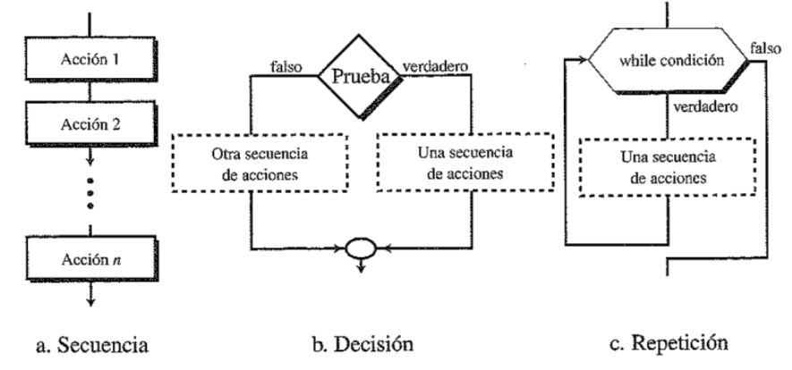

Estructuras de control
Las estructuras de control son aquellas que permiten modificar el flujo normal de ejecución de instrucciones de un programa, dependiendo del resultado de unas condiciones.
Estas estructuras nos permiten realizar acciones típicas en nuestros scripts, como pueden ser bucles o la toma de decisiones.

Bucles FOR
Un bucle es una estructura de control que repite un bloque de instrucciones, denominado cuerpo, siendo cada repetición conocida como iteración. En el caso del bucle for, se repite el bloque de instrucciones un número determinado de veces.
Los bucles nos permiten realizar las mismas acciones con los elementos de una lista, como puede ser realizar una misma operación matemática con cada elemento.
Sintaxis
Si tiene una lista con diferentes elementos, como distintos tipos de proteínas, y quiere imprimir por pantalla todos los nombres, puede hacerlo de forma individual como ya se enseñó anteriormente. Esto nos conduce a los siguientes problemas:
- Código muy repetitivo.
- Trabajo lento y poco eficiente.
- Cada vez que se altere la longitud de la lista, cambiar el código.
Por este motivo, lo recomendable es utilizar la siguiente estructura.
Nomenclatura de la variable
Tenga en cuenta que puede elegir el nombre que quiera para la variable temporal. Se ha elegido en este caso proteina porque conviene utilizar nombres significativos, que representen los elementos de la lista.
Es muy importante tener cuidado con las líneas sangradas. A veces, el bucle se puede ejecutar sin problemas pero que no produzca el resultado esperado. Veamos algunos ejemplos de esto:
La hemoglobina es una proteína.
La caseina es una proteína.
La lacasa es una proteína.
La albumina es una proteína.
albumina
Trabajar con bucles for
Función range ()
La función range () se utiliza principalmente para generar y trabajar con una serie de números. Veamos un ejemplo simple:
Función list ()
Los resultados generados por la función range () pueden convertirse directamente en una lista. Para esto se utiliza la función list ().
Observe que en este caso el rango determinado es (2,19,2). Los dos primeros argumentos indican el rango de valor de los elementos (entre 2 y 19), y el tercero indica el tamaño de salto entre los valores (de 2 en 2).Ejemplo
Tabla de multiplicar del 5
5 * 0 = 0
5 * 1 = 5
5 * 2 = 10
5 * 3 = 15
5 * 4 = 20
5 * 5 = 25
5 * 6 = 30
5 * 7 = 35
5 * 8 = 40
5 * 9 = 45
5 * 10 = 50
Condicional IF
La estructura de control o sentencia condicional if permite que un programa ejecute una serie de acciones en función de si se cumple una determinada condición.
Esta sentencia es la toma de decisión más básica, ya que consiste en comprobar si la prueba condicional o predicado es verdadero o falso, y en base a esto, ejecutar o no el código que sigue a la sentencia.
Sentencias if
La sentencia if más simple está compuesta por dos elementos: una prueba condicional y una acción.
Como podrá comprobar, si no se cumple esta condición no se generaría ninguna salida.Sangrado
Al igual que ocurría anteriormente, es fundamental prestarle atención al sangrado. Después de la sentencia if, todas las líneas sangradas se ejecutarán si cumple la condición, y se ignorará todo el bloque si no se cumple.
Sentencias if-else
¿Qué ocurre si queremos que se genere una salida si no se cumple la condición? Para esto, utilizamos las sentencias if-else.
El bloque if-else es equivalente a la sentencia if ya vista, pero incluye una sentencia else en la que se define una acción si la prueba condicional no es verdadera. Veámoslo con el mismo ejemplo de antes:
Sentencias if-elif-else
En muchas ocasiones, va a necesitar probar más de dos situaciones, y para ello es recomendable utilizar las sentencias if-elif-else. En este caso, Python va a ejecutar en orden las condiciones, y la primera que se cumpla será de la que ejecute su código asociado. Si ninguna de las condiciones es verdadera, ejecutará el código asociado a else como anteriormente.
Sentencias if-elif-else
Tenga en cuenta que puede utilizar múltiples bloques elif, añadiendo todas las pruebas condicionales que vea necesarias. Además, en este tipo de cadena Python no requiere un bloque else al final, por lo que puede omitirlo, siempre y cuando estos bloques elif engloben todas las posibles situaciones. Es decir, ha de cumplirse uno.
Combinación con listas
La combinación de sentencias if con listas es especialmente útil. Veamos un ejemplo:
Ejemplo
Comprobar si un numero es mayor a 0
Divisores de un número
Bucles WHILE
A diferencia de los bucles for, que ejecutan un bloque de código por cada elemento que compone la condición, los bucles while ejecutan el bloque de código siempre que se cumpla una condición determinada, dejándolo de repetir cuando sea falsa.
Es decir, el bucle while nos permite realizar múltiples iteraciones basándonos en el resultado de una expresión lógica que puede tener como resultado un valor True o False.
Sintaxis
A continuación se muestra la sintaxis básica de un bucle while:
El resultado será el siguiente:
Nº veces se ha completado el bucle: 1
Nº veces se ha completado el bucle: 2
Nº veces se ha completado el bucle: 3
Nº veces se ha completado el bucle: 4
Nº veces se ha completado el bucle: 5
El bucle ha terminado
Bucle infinito
Es fácil cometer errores y programar un bucle infinito involuntariamente. Para parar este ciclo, presione Ctrl + C.
Trabajar con bucles while
Función break
Existe una forma alternativa de interrumpir o cortar los ciclos: utilizando la palabra reservada break. Esta nos permite salir del ciclo incluso si la expresión evaluada en el bucle es verdadera.
En este ejemplo, se muestra cómo el valor de la variable va disminuyendo una unidad hasta que sea igual a 5, finalizando el código. Observe cómo finaliza el código aunque el bucle while se siga cumpliendo (ya que el valor sigue siendo superior a 0).
Función continue
En lugar de interrumpir el bucle, podemos utilizar la sentencia continue para volver al principio del bucle en función del resultado de la prueba condicional.
Veamos un ejemplo en el que un bucle imprime los números impares entre el 1 y el 20.
Ejemplo
Suma de n números enteros
Ejercicios
EJERCICIO 1. Escribir un programa que le pida al usuario un número, y si es impar lo eleva al cuadrado, si no al cubo.
Respuesta
EJERCICIO 2. Escribir un programa que almacenen en una lista el cuadrado de los diez primeros números enteros.
Respuesta
EJERCICIO 3. Escribir un programa que le pida al usuario un número y le diga a qué día de la semana corresponde.
Respuesta
EJERCICIO 4. Escribir un programa que le pregunte al usuario una contraseña. Si coincide con contraseña, debe indicar que es correcta.
Respuesta
EJERCICIO 5. Escribir un programa que calcule el factorial de un número introducido por el usuario.
Respuesta
EJERCICIO 6. Escribir un programa que calcule la suma de los n primeros números impares.
Respuesta
EJERCICIO 7. Escribir un programa que le pida al usuario un número y le diga si es un número primo o no.